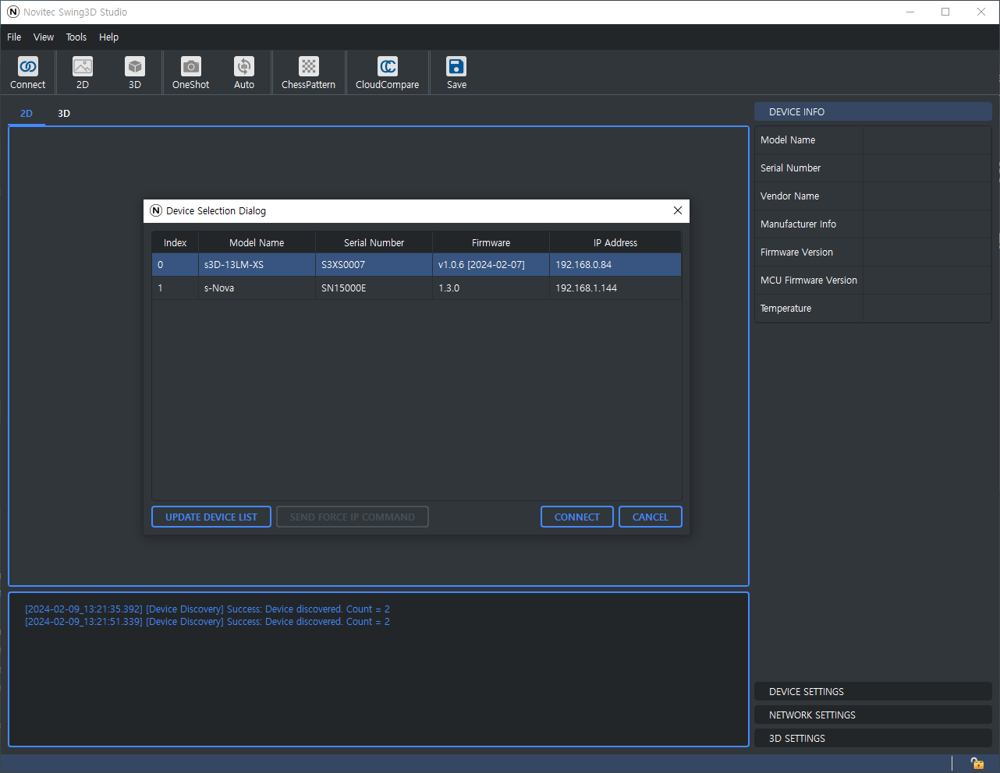
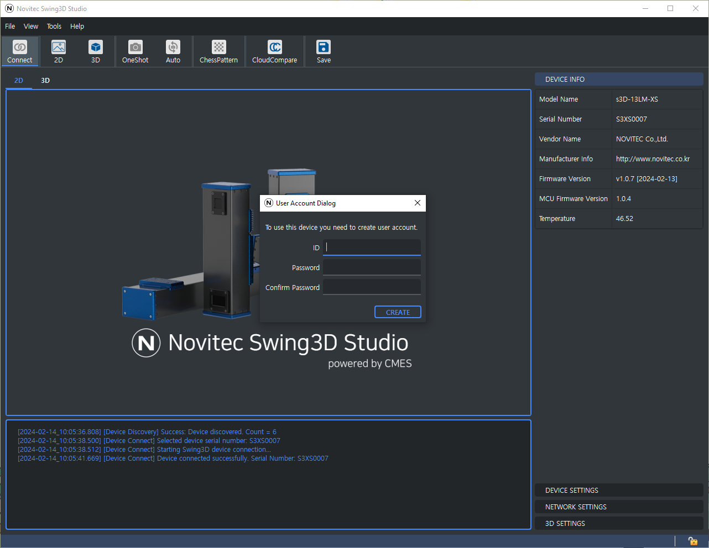
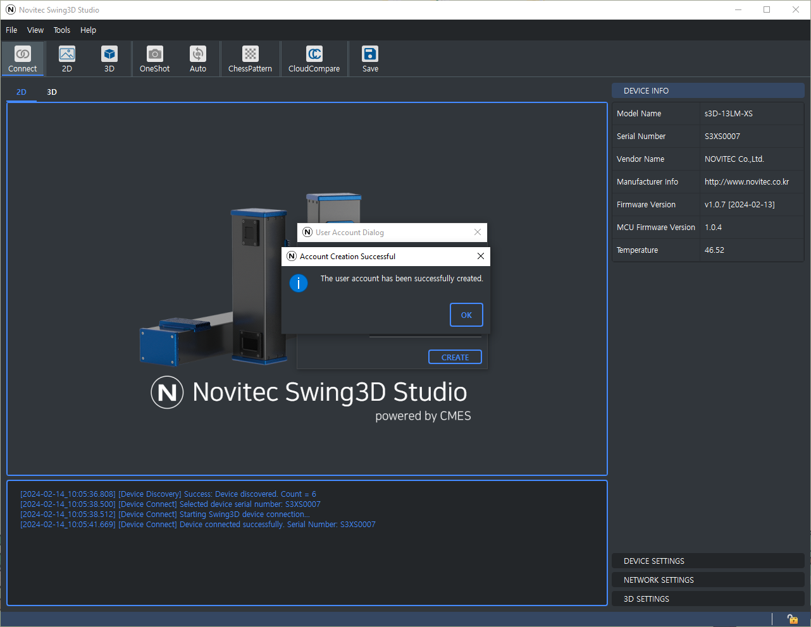

Using Swing3D Studio
- Select and connect to Swing3D
- 
- Account Settings Dialog
If you don’t have an account set up when you connect to Swing3D, a dialog box appears that allows you to set up an account.

- Create Account
After entering your username and password, click the “Create” button to set up your account. If the account setup is successful, you will see a message window stating that it was successful.

Using API
To activate your device through the API, you can use the following C++ code snippet:
unsigned int numOfDevices;
swing3d::Discover(&numOfDevices);
if (numOfDevices == 0)
{
std::cout << "No devices were found." << std::endl;
return 0;
}
swing3d::Device device;
swing3d::RET_BOOL ret = device.ConnectBySerialNumber("S3XS0007");
if (ret.errCode != swing3d::ErrCode::SWING3D_OK)
{
std::cout << ret.errorMessage << std::endl;
return 0;
}
// Activate swing3d
ret = device.SetDeviceActivationStatus("user", "1234");
if (ret.errCode != swing3d::ErrCode::SWING3D_OK)
{
std::cout << ret.errorMessage << std::endl;
return 0;
}
else
{
std::cout << "Device activation successful." << std::endl;
}
This code attempts to set the device activation status using the provided user ID and PIN. If the operation is successful, it prints a confirmation message.